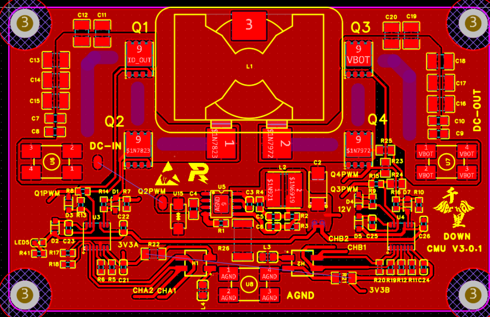
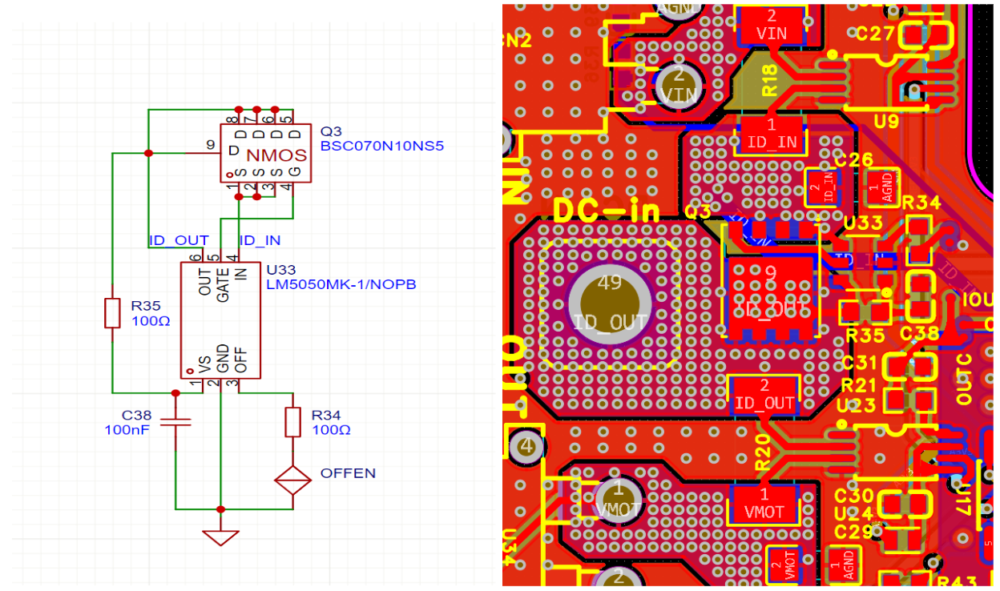
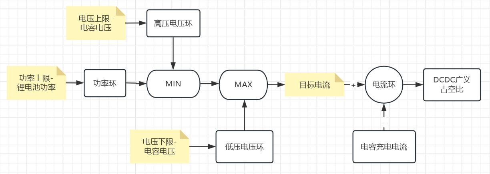
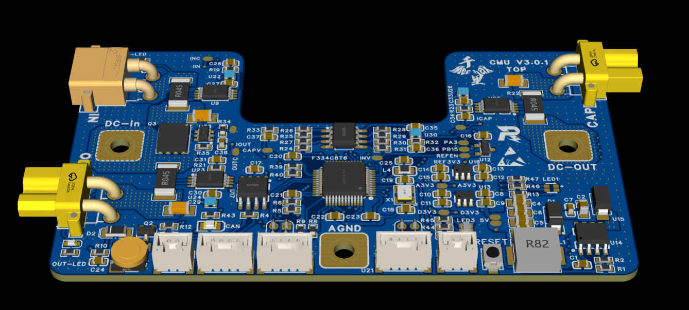
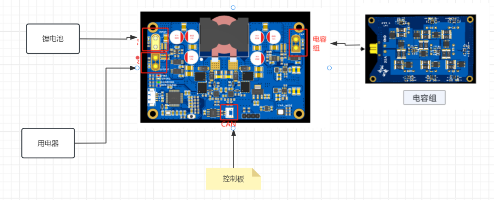

| 项目类型 | 国市创大学生创新训练项目 |
| 结题评级 | 良好 |
| 技术方向 | 电力电子 DC-DC 变换器 |
针对储能系统中负载突变引起的尖峰功率需求，设计了一套基于四开关Buck-Boost（FSBB）拓扑的DC-DC变换器，实现升降压无缝切换与双闭环数字控制。
FSBB拓扑由四个功率MOSFET构成（Q1–Q4），根据输入/输出电压关系自动切换工作模式：
| 模式 | 条件 | 开关动作 | 功率流 |
|---|---|---|---|
| Buck | Vin ≫ Vout | Q1/Q2 PWM, Q3 ON, Q4 OFF | 降压输出 |
| Boost | Vin ≪ Vout | Q3/Q4 PWM, Q1 ON, Q2 OFF | 升压输出 |
| Buck-Boost | Vin ≈ Vout | 四管协同PWM | 无缝过渡 |

系统采用模块化设计，分为电池模块、尖峰补能模块（FSBB+超级电容）与控制模块三部分。各模块通过标准化接口连接（如XT30电源接口、GH1.25通信接口等），支持热插拔与并联扩展。整体能量流为：锂电池提供基础能量，超级电容承担尖峰功率，FSBB负责双向能量调度与升降压匹配。


为同时满足"电池安全功率约束"与"超级电容SOC（电压）边界约束"，系统采用"三环并联"协同控制结构：
控制器通过MIN/MAX选择器融合功率与电压两类约束，实时生成安全的目标电流，最终调节DCDC的广义占空比，实现双源能量协同调度与平滑过渡。采用增量式PID作为各环调节器，其输出控制量增量、计算量小、对积分饱和不敏感，适用于STM32平台，可在保证精度的同时获得毫秒级动态响应。

系统采用"STM32 + 高速比较器（Comparator）"协同架构：STM32负责上层状态机、能量管理策略与参数更新；高速比较器实时监控关键节点阈值。当检测到突变信号时，比较器可纳秒级触发硬件中断，实现硬件级快速响应。
切换模块核心采用双向功率MOSFET阵列，配合同步整流降低导通损耗；引入理想二极管控制与软启动逻辑抑制切换瞬间的电压尖峰与反向电流倒灌，保护锂电池与超级电容安全。

户外复杂工况下，电流采样信号常呈现"噪声与真实突变叠加"的特点。系统采用趋势感知的动态限幅滤波：通过历史状态累积判断电流变化趋势，被判定为趋势性变化时提高限幅阈值加速跟踪，被判定为噪声时收紧限幅阈值加强平滑，实现滤噪与动态响应的平衡。